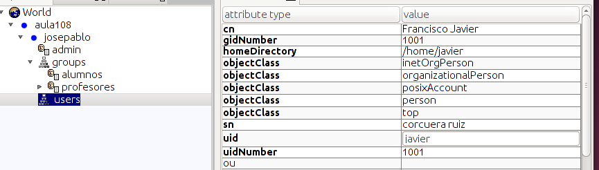

- Módulo: Administración de sistemas operativos.
- Título del trabajo LDAP
- Componentes del grupo: Jose Pablo González Galán
- Curso Académico: 2014/2015
- Fecha de entrega: 04/11/2014
Asignamos la dirección IP.
Modificamos el fichero con los repositorios de debian.
Actualizamos.
Cambiamos el nombre de la máquina.
Y comenzamos a instalar ldap y otros servicios..
Instalado! Procedemos a configurarlo.
Se ha configurado corectamente,ahora reiniciamos el servicio.
Ahora descargamos el JXplorer y lo copiamos en la siguiente ruta.
Modificamos el fichero bashrc con el siguiente contenido.
Arrancamos LDAP
Creamos una nueva conexion.
Y comenzamos a añadir usuarios, profesores y alumnos según con unidades organizativas.
